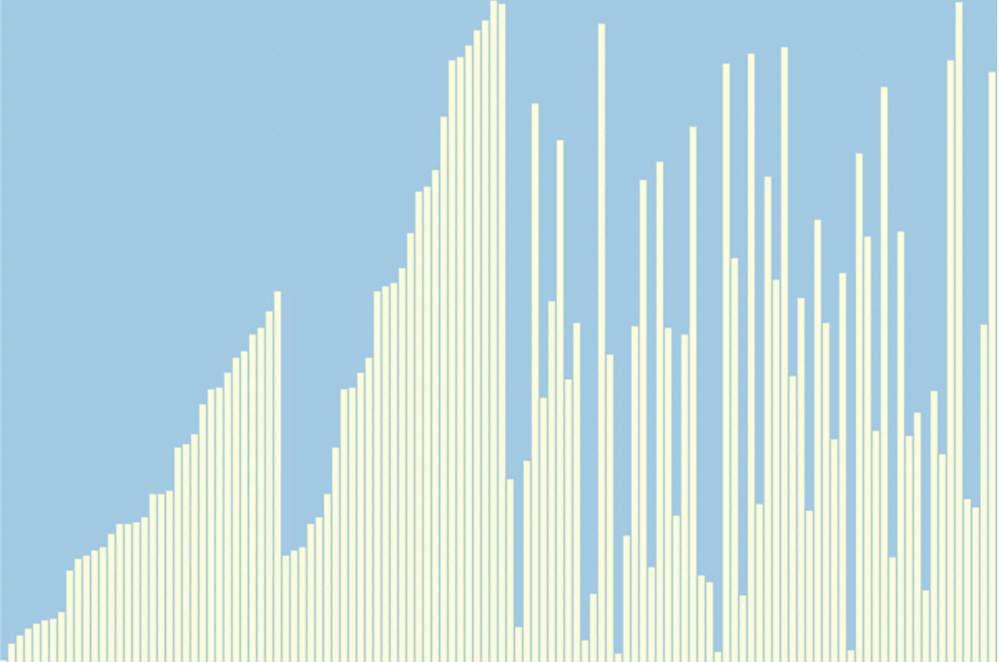
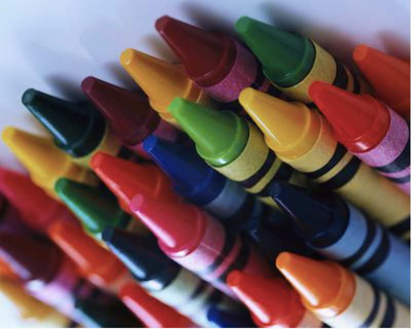
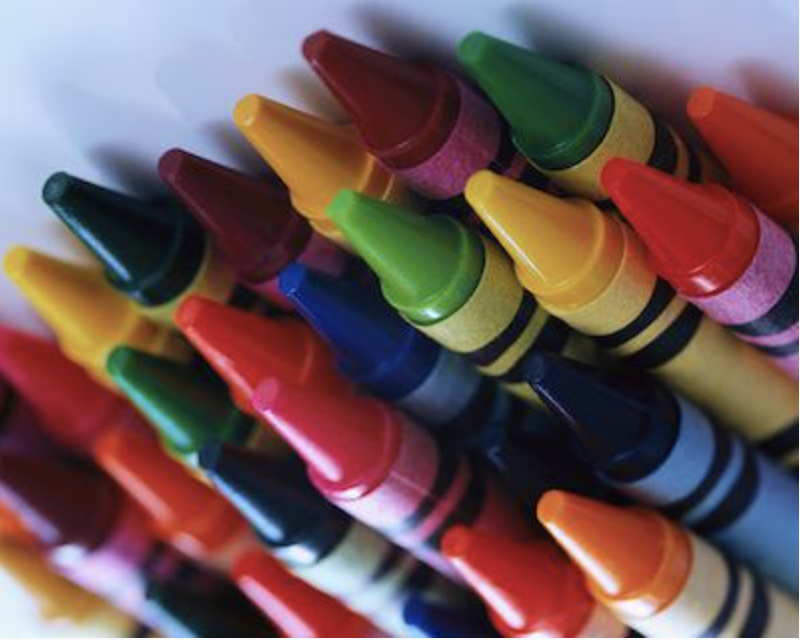
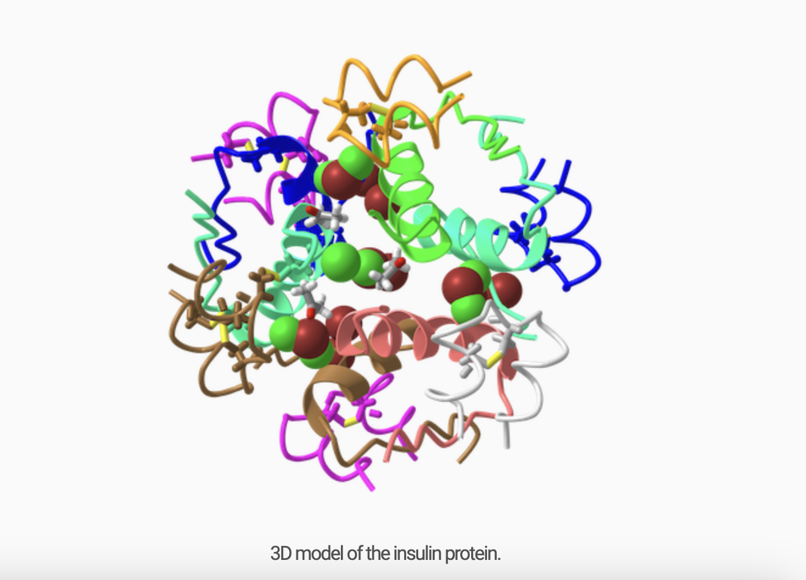

About Me
FRANK KUSI APPIAH
My name is Frank Kusi Appiah, and I'm a young and hardworking aspiring software engineer and electrical engineer from Ghana. My fascination with technology goes back a long way. I started by disassembling tv remotes to look at what they were made of, then I began repairing tvs, radios, and other electrical gadgets. I found my home with the Robotics club in high school where I built robots from Vex, Arduino and EV3 kits for competitions nationally and internationally. During this experience, I became aware of the power of technology to revolutionize problems faced by our community, especially agriculture.
Agriculture is the backbone of many African economies, yet innovative technology rarely enters the fields and farms that feed our nations.I aim to change that.
I envision an Africa in 10 years where intelligent robots toil alongside farmers, automating irrigation, predicting weather patterns, and detecting crop diseases faster than the human eye. An Africa where technology doesn't displace the smallholder farmer but empowers them with the tools to feed a growing continent.
My vision began in my sophomore year of high school when I founded AgriTech, a youth-led initiative to fuse agronomic best practices with appropriate technology. With a team of 7 like-minded students, we developed Arduino-based sensors to monitor soil moisture and automate irrigation for water conservation. We traveled from village to village, training 50 local farmers to construct and install the devices, increasing yields by 15% and reducing water usage by 20%.
My small but meaningful impact fueled my passion. I am now determined to study agricultural robotics and AI at university to develop autonomous drones and rover crops that can digitally map farmland, identify soil deficiencies, and perform precision spraying. After graduating, I will return to Ghana to find a robotics company that makes this emerging technology affordable and accessible to small-scale farmers.
I envision a future Africa that leverages technology to grow more nutritious food while preserving the continent's fragile environment. It is an Africa where family farms flourish because innovation has made farming profitable and sustainable. I am committed to making this vision a reality because when Africa thrives, the benefits will be felt across borders and oceans. The change begins with a single seed - all it needs is the right soil and care to grow into something groundbreaking. I am determined to nurture the seeds of African innovation.
Skills
Python
Java
Dart
HTML
CSS
JavaScript
Node.JS
TypeScript
GitHub
Git
Excel
PowerPoint
Languages
English
Akan
Experience
Software Engineer Intern
Anansenet Company Limited
Nov 2024 - Present
- Developed scalable web-based applications, improving system efficiency.
- Collaborated with cross-functional teams to design and implement new features.
- Debugged and resolved critical software issues, reducing downtime by 30%.
- Gained hands-on experience with Agile methodologies and version control systems like Git.
Help Desk Technology Consultant
Center for Information Technology, Oberlin College
Aug 2024 - Present
- Served as a liaison between students, faculty, staff, and professional CIT members, reporting to the Help Desk Coordinator.
- Provided first-level software and networking support for the Oberlin College community, addressing issues related to macOS, Windows, Microsoft Office, web browsers, OCApps, printing, and network connections.
- Entered and tracked all support requests via SolarWinds work order system, escalating complex issues to professional staff when necessary.
CodePath Student
Intro to Web Development
Aug 2024 - Present
- Learned the basics of JavaScript, HTML, and CSS.
- Developed a responsive web application addressing climate change issues in Africa.
- Implemented engaging layouts and interactive features.
Customer Support
MTN Ghana Scancom PLC Ltd
Nov 2023 - July 2024
- Assisted customers with resolving technical issues related to mobile and data services, ensuring a positive customer experience.
- Provided usage education and resolved issues for existing users.
- Gathered feedback to enhance customer experience.
Robotics Technician
Prempeh College
Nov 2022 - Sept 2023
- Maintained and managed lab kits.
- Created catalogs, organized kits, and prepared reports for the club coach.
Education
Bachelor of Arts in Computer Science & Mathematics
Oberlin College of Arts and Sciences
Class of 2028
Research and Reasoning
Algorithmic Thinking & Problem-Solving with Python
Calculus I
Data Structures-Beginner(Self-learnt)
West African Senior Secondary Certificate Exams (WASSCE)
Prempeh College
March 2020 - September 2023
Core Mathematics
Elective Mathematics
Chemistry
Physics
Biology
Projects
Visualizing Various Sorting Algorithms
Developed an interactive tool to demonstrate the workings of various sorting algorithms, providing students with a visual learning aid to enhance their understanding of algorithmic concepts.
Fun With Recursion
Designed intricate and visually appealing patterns using the principles of recursion.
Imagegram
Developed an image editor that can read an image and apply a sequence of user-specified filters. The editor includes functions for inverting colors, flipping images, and adjusting contrast levels. Swipe to see more filtered images.
 

Protein Matching
Worked on protein sequence alignment and data summarization using string and list manipulation. Focused on analyzing protein sequences, which are chains of amino acids represented by single-letter codes.
Penguin Data Science
Analyzed data collected by biologists on three penguin species from different islands around Antarctica. Applied data science techniques to explore biodiversity and answer ecological questions.
Ckodon SAT Testing Platform
Developed a web-based platform for SAT test-takers, enabling users to assess their strengths. The software times test sessions, grades users, and provides personalized feedback for a college application firm.
Brilla Hackathon
Participated in the Brilla AI Hackathon, developing an open-source, AI-powered tool to provide students from underrepresented high schools in Ghana with equal access to learning resources for the NSMQ National competition.
Experience
Software Engineer Intern
Anansenet Company Limited
Nov 2024 - Present
- Developed scalable web-based applications, improving system efficiency.
- Collaborated with cross-functional teams to design and implement new features.
- Debugged and resolved critical software issues, reducing downtime by 30%.
- Gained hands-on experience with Agile methodologies and version control systems like Git.
Help Desk Technology Consultant
Center for Information Technology, Oberlin College
Aug 2024 - Present
- Served as a liaison between students, faculty, staff, and professional CIT members.
- Provided first-level software and networking support.
- Tracked support requests via SolarWinds, escalating complex issues as necessary.
CodePath Student
Intro to Web Development
Aug 2024 - Present
- Learned the basics of JavaScript, HTML, and CSS.
- Developed a responsive web application addressing climate change issues in Africa.
- Implemented engaging layouts and interactive features.
Customer Support
MTN Ghana Scancom PLC Ltd
Nov 2023 - August 2024
- Assisted customers with resolving technical issues related to mobile and data services, ensuring a positive customer experience.
- Handled inquiries related to billing, account management, and service activation, providing timely and accurate information.
- Collaborated with technical teams to escalate and troubleshoot complex problems, achieving a high-resolution rate for customer complaints.
Robotics Technician
Prempeh College
Nov 2022 - Sept 2023
- Maintained and managed lab kits.
- Created catalogs, organized kits, and prepared reports for the club coach.